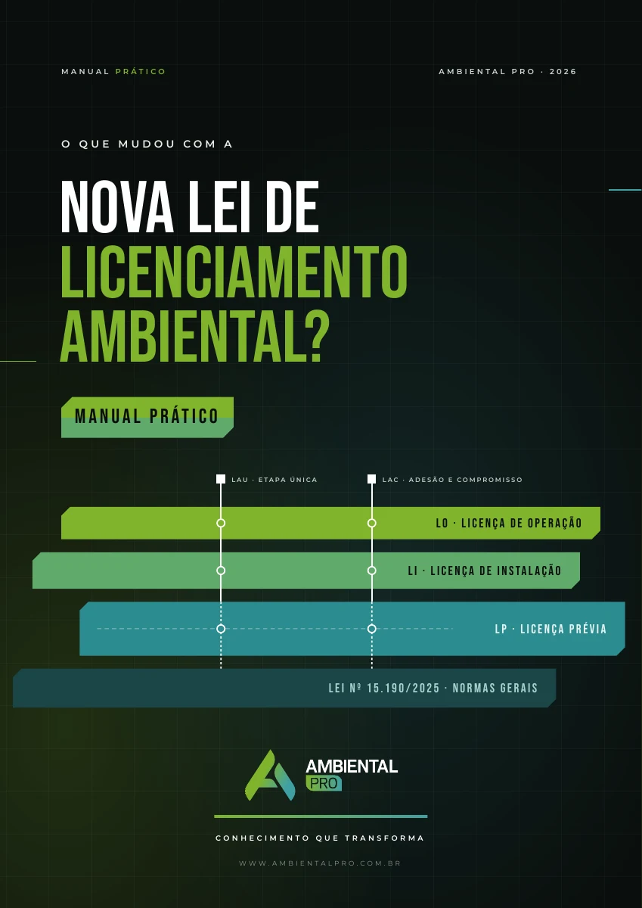

EBOOK PDF // EDIÇÃO 2026Manual da Nova Lei de Licenciamento Ambiental
Entenda o que mudou na lei e organize licenças, prazos, condicionantes e responsabilidades na sua rotina.
- 96 páginas com 15 capítulos organizados em cinco partes
- Quadros comparativos, exemplos de aplicação e checklists
- Guia prático do consultor, glossário e linha do tempo